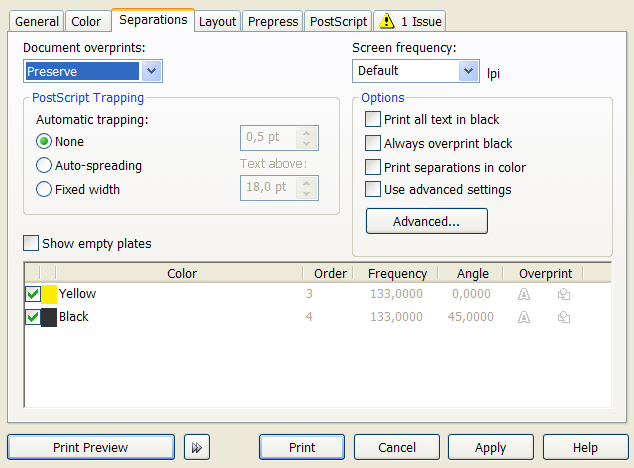
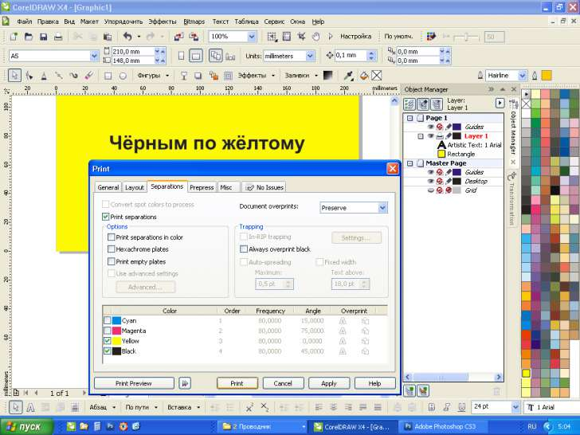
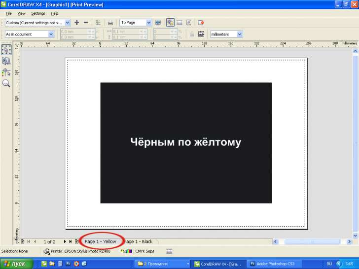
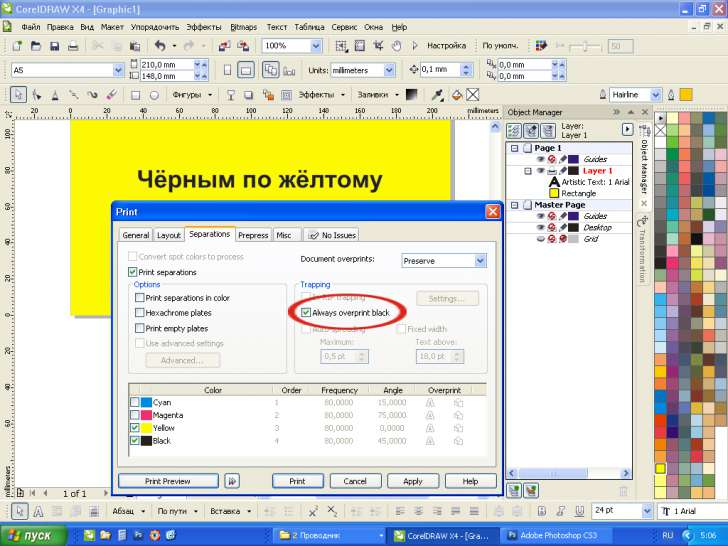
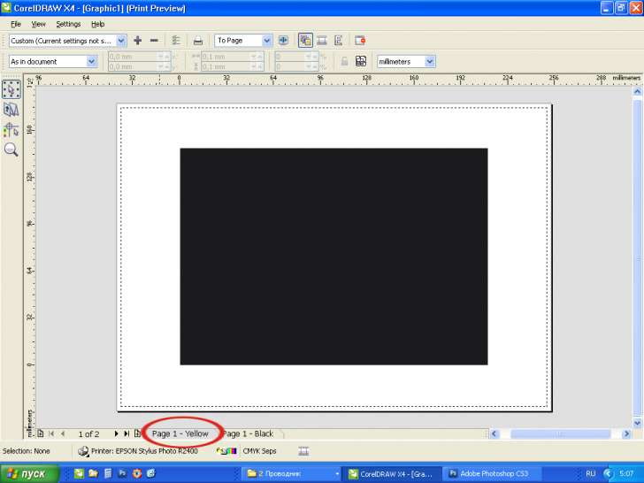

Наложение заливки (Оверпринт) не отображается при просмотре цветоделения
Пожалуйста, подскажите не слишком опытному пользователю. Недавно работаю с типографией, а они сами не знают, как это правильно делать. Что я делаю не так? На цветном фоне мне нужно напечатать черный текст наложением заливки для офсетной печати. Я подключаю соответствующую функцию "Правка"- "Наложение заливки" (ставлю галочку). Потом проверяю, что получилось: "Файл"-"Печать"-"Цвет"-"Печать с цветоделением"-"Просмотр". У меня, предположим, черный текст (0,0,0,100) на чисто-желтом фоне. Я надеюсь, что Желтая пленка должна получиться сплошной, но она все равно получается с белыми дырами (там, где должен быть текст). И при подготовке макета к печати желтая пленка так и выходит с дырами. Как мне этого избежать? То есть я понимаю, что можно просто в цвет текста грубо добавить цвет фона (C=0, M=0, Y=100, K=100), но, во-первых, у меня фон же может быть неоднотонный, а во-вторых - зачем тогда эта функция? КАК это сделать? У меня Corel Draw X5.
Собака может быть зарыта в выборе принтера.

Если принтер поддерживает данную функцию, в списке Document overprints можно выбирать варианты Ignore или Preserve. Если не поддерживает – будет доступен только вариант Ignore. Например, если я выберу офисный HP, подключенный к моему компьютеру, будет активным только первый вариант и наложение в окне просмотра отображаться не будет. Если выберу Device Independent PostScript File или Adobe PDF, то уже смогу выставить значение Preserve и в окне просмотра все отобразится как надо.
Не. Принтер поддерживает функцию Preserve, а толку. Выбрала вот для печати "Файл, не зависящий от устройств". Далее - Document overprints -Сохранить (Preserve). Все равно. Дело в том, что это не просто в моем Кореле на моем компе так отображается, а в типографии с моего макета и пленки такие получаются.
Без слов:




Да хорошо бы, кабы так, но мне не надо все черные элементы оверпринтом печатать, а только конкретный текст, которому я хочу присвоить эту функцию.
Разве так не получится?
EG, а не пробовал выделить конкретный текст и правой кнопкой по нему выделить Оверпринт?
Так я назначаю эту функцию, галочка стоит, а при просмотре цветоделения белые дыры
EG, укажи принтер PS или Adobe PDF и все заработает.
И не какую галочку в разделе Separetions ставить не надо.
Указывала. НЕ РАБОТАЕТ!!!
То есть получается, что на всех компьютерах при выборе любого принтера с этим файлом везде одни и те же проблемы? Тогда интересно будет взглянуть на сам файл. Ну или если его сложно прислать целиком – можно хотя бы загрузить его фрагмент с проблемными объектами.
Страницы